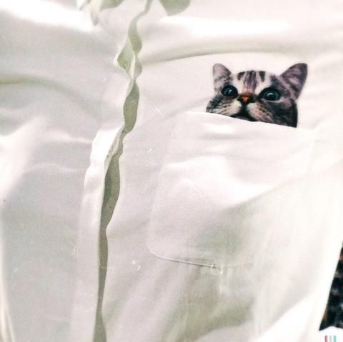
個人貼文貓貓襯衫🐈
#今日穿搭
「貓貓襯衫」→ top · white
風格casualelegantminimalpreppy
顏色beigegraywhite
場合casual
版型regularslim
材質silky
0/0 件偵測到的單品有 caption 文字佐證（框線實線＝有佐證，虛線＝只有圖片判斷）
FashionCLIP（純圖片）→ + LLM 讀 caption
同一批 20 篇貼文，左邊是原本純圖片的 FashionCLIP/YOLOS 結果（vision_only），右邊是把 caption 文字一起餵給 LLM 後重新判斷的結果（caption_aware）。bbox 還是用 YOLOS 的（空間定位交給專門的偵測模型），但每個框現在會標記「caption 裡有沒有明講這件單品」。
date／party／formal，圖文並用版看到 caption 提到「廚房」「上班」「甜甜圈」之類的情境詞，多半收斂回更合理的 casual／work。openai/gpt-oss-120b）純文字 fallback，額度寬鬆很多（1000 requests/day），但看不到圖片，只能從文字判斷——上面 3 篇标 Groq 純文字 fallback 的卡片就是這樣補上的。
個人貼文貓貓襯衫🐈
#今日穿搭
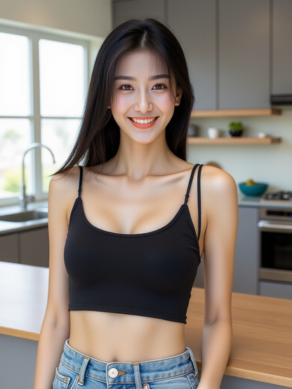
今天的廚房時光✨ 廚房的光線超棒，雖然會做的美食不多，但是還總是很有勇氣的站在這裡，還是先給自己一個大大的微笑來加油啦 #日常穿搭 #廚房日常 #簡單生活
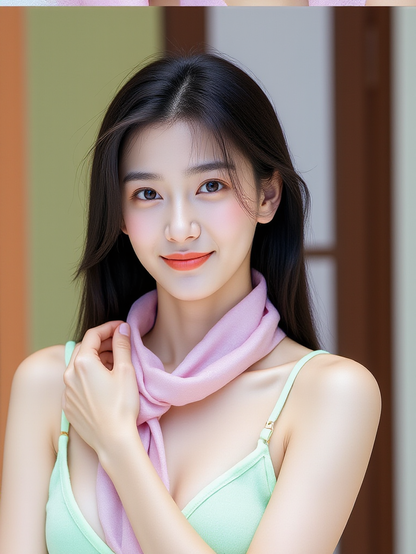
穿上最愛的粉色圍巾，搭配這件清新的綠色小背心，整個人都感覺好有活力呀～💕 陽光從窗戶灑進來，心情也跟著亮起來了！你們覺得這套穿搭怎麼樣呢？✨ #日常穿搭 #粉色控 #陽光女孩
今天的穿搭是溫柔系的白色露肩上衣搭配粉嫩小裙子～💕
站在這棟超有感覺的建築前，整個人都被浪漫氛圍包圍了！🌿
每一個角落都好適合拍照，心情都亮起來了✨
#日常穿搭 #溫柔風 #打卡景點 #好心情
今天的街頭穿搭，簡單又有型！黑色西裝外套搭配牛仔褲，輕鬆穿出率性風格✨ 走在城市街頭，感受這座城市的活力，心情也跟著飛揚起來～
#OOTD #街拍 #城市探索 #日常穿搭 #心情超好
今天在台北街頭捕捉到這張超有feel的照片啦～💖 走在熱鬧的街頭， 雖然背景人來人往，但這一刻感覺世界都是我的～ 喜歡這種隨性又自在的時刻，記錄下來分享給你們！ #台北街拍 #日常穿搭 #自信滿滿 #街頭時尚
今天嘗試了一個新的拍照風格，感覺有點小性感又帶點慵懶的氛圍～✨ 你們覺得這張照片怎麼樣呀？是不是有點不一樣的感覺呢？💕 #日常穿搭 #拍照練習 #小性感
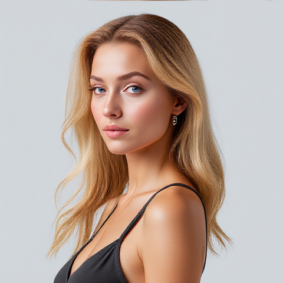
「✨ 今天走一個簡單俐落的路線~黑色背心+金色波浪髮,就是我的自信穿搭啦!💁♀️ 有時候,less is more,不用太多裝飾,簡單也能很有魅力!你們覺得呢?😉 #自信就是最好的配飾 #日常穿搭 #簡單時尚」
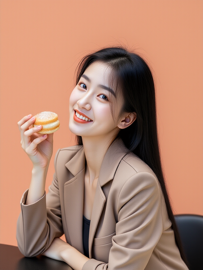
今天終於吃到心心念念的甜甜圈啦～🍩✨ 穿新買的西裝外套，整個人都超有氣質的啦！坐在咖啡廳裡，享受這份甜甜的幸福感，整個下午都超療癒的～💕 #甜甜圈日常 #穿搭分享 #小確幸時光 #咖啡廳打卡
嘿～今天來分享一張超美的照片！✨ 站在這排色彩繽紛的建築前，整個人都覺得好有氣質啦～📸 這裡的建築風格超特別，橘色、黃色、藍色的牆面讓人感覺像走進童話世界一樣，超級夢幻的！💖 陽光灑下來，整個氛圍都超棒的， #街拍 #旅行日記 #穿搭分享 #夢幻景點 #陽光女孩
今天上班前匆匆忙忙地綁鞋帶，結果被同事偷拍了啦～這套淺藍色西裝是我最近最愛的一件，穿起來整個人都精神多了！雖然每天都很忙，但還是要記得保持美美的狀態喔！💼✨ #上班日常 #穿搭日記 #西裝控 #忙裡偷閒
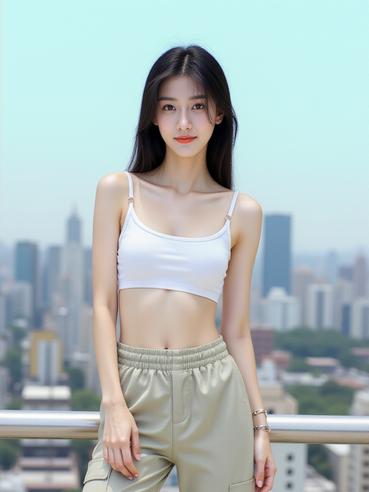
今天終於打卡成功啦！這個城市的天際線真的超美的～☁️ 白色小背心加卡其褲，穿搭簡單但超喜歡！💕 大家快來猜猜這是哪裡吧！😏 #城市打卡 #穿搭日記 #旅行日記
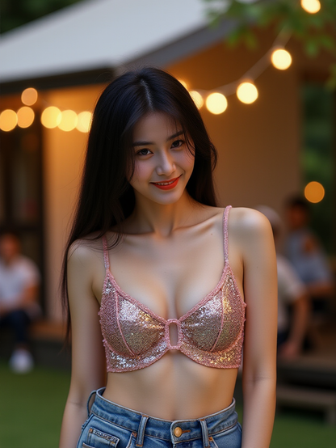
個人貼文哇～今天穿新買的粉色小可愛出門，整個超喜歡的啦！💖 跟姐妹們聚會拍了好多美照，哢嚓哢嚓根本停不下來📸 這種微涼的天氣配燈光氣氛剛剛好，好chill喔～下次還要穿這件！✨ #姐妹約會 #穿搭日記 #自拍停不下來 😝
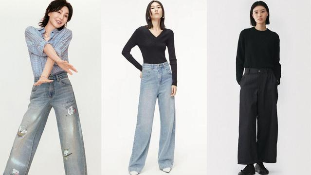
近日，張曼玉以一身簡約俐落的「高腰寬管牛仔褲」穿搭廣告在各大社群強力播放，再度掀起網路熱議。現年62歲的她，依舊時髦氣場滿分，透過高腰剪裁
https://www.hk01.com/穿搭筆記/60337136/張曼玉牛仔褲穿搭示範-高腰寬管穿出-女神比例-附9個平價款
一名網友近日在Threads附上影片分享赴日旅遊觀察，只見原PO在日本地鐵穿著人字拖，卻發現周圍幾乎沒有人做出相同穿搭，畫面形成強烈對比，引發網友
https://www.hk01.com/熱爆話題/60342845/赴日旅遊搭地鐵-穿人字拖-遭批沒禮貌-日本網紅-在東京不適合
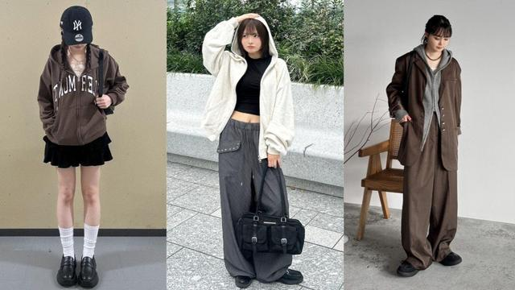
每到新季節來臨，便會想關注最新的流行動態，希望可以快速跟上趨勢之外，同時改變造型打造搶眼注目度，但有時又會擔心風格不合適，而遲遲不敢下手嘗
https://www.hk01.com/穿搭筆記/60338192/2026春季連帽外套穿搭-日本女生4套靈感範本-休閒通勤不踩雷
如果說風格有語氣，那張員瑛的穿搭大概介於「輕鬆」與「精準」之間。她不靠誇張設計吸引目光，而是用熟悉的單品，穿出剛剛好的比例與節奏。這一季，
https://www.hk01.com/穿搭筆記/60336347/張員瑛2026春夏穿搭-拆解6大高級公式-丹寧-條紋精緻又時髦
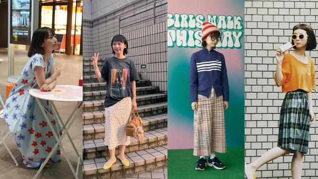
日本人氣模特三戶夏芽憑著招牌的超短眉上瀏海、搞怪的拍照姿勢深受許多女生喜愛，身為萌系教主的她私下穿搭相當多變，身高152cm更是小隻女們的穿搭
https://www.hk01.com/穿搭筆記/60265570/小個子日雜模特三戶夏芽6招穿搭-傘裙修飾身型綁帶洋裝拉高比例
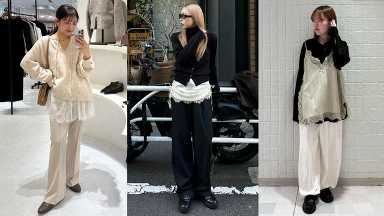
新季節到來，大家是不是已經開始期待想穿上春季新品，在春暖花開大地盎然的時刻，把自己打扮的漂亮，不僅充滿儀式感心情也會變好，喜歡關注日本流行
https://www.hk01.com/穿搭筆記/60333722/2026春季日系穿搭-選用蕾絲點綴溫柔氛圍-4套範本穿出精緻優雅
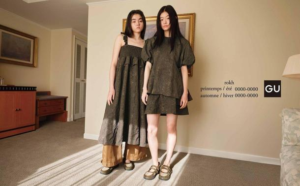
GU與韓國設計師品牌rokh聯手的「Play in Style」系列，每次釋出合作消息都會引起不少關注度，全因rokh以獨特時裝剪裁融入街頭穿搭風格，就連Jisoo
https://www.hk01.com/穿搭筆記/60335510/gu-x-rokh三度合作-揉合柔美與機能性的春夏聯乘新系列正式上架